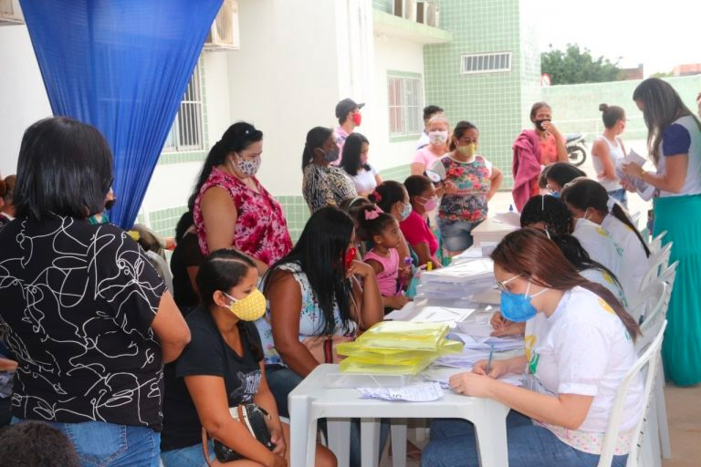

Módulo 2 | Aula 3 O cuidado e o autocuidado na APS: espaço para a ampliação dos níveis de LS
O cuidado centrado na pessoa, o autocuidado da pessoa em condição crônica de saúde e a LS na APS
De acordo com o The Health Foundation (2016), há um crescente número de pessoas que vivem com doenças crônicas, o que causa preocupação também pelo aumento dos custos despendidos pelos serviços de saúde. O aumento do nível de Literacia para a Saúde é uma das estratégias propostas para: melhorar a qualidade de vida, prevenir complicações e agravos, promover a saúde desta população, e também dos que não possuem doença crônica, e para reduzir custos do serviço de saúde.

Mas você deve se perguntar: como melhorar os níveis de LS, não é mesmo? Neste caso, é desejável que ocorra o cuidado centrado na pessoa, que não é uma ferramenta com passo a passo, mas sim uma mentalidade que pode utilizar de diversas abordagens.
Abordagens centradas na pessoa, decisões compartilhadas e o apoio ao autocuidado podem melhorar a qualidade do cuidado, os resultados de saúde e a experiência vivida pelo usuário (GUSSO; LOPES; DIAS, 2019; THE HEALTH FOUNDATION, 2016).
E, o que seriam essas decisões compartilhadas?
A tomada de decisão em conjunto é um processo colaborativo e que pode ser utilizado, por exemplo, no manejo da dor articular em um paciente com sarcopenia e osteopenia. Durante a comunicação com o profissional de saúde, o paciente terá acesso e compreenderá sobre opções terapêuticas, riscos, benefícios, mas também irá expressar suas preferências, circunstâncias pessoais e sociais, objetivos, valores e crenças. Pode ser que para um usuário dos serviços de saúde a escolha seja pela medicalização e alívio da dor, mas pode ser que para outro a escolha seja por realizar fisioterapia seguido de atividade física de fortalecimento muscular e não ser medicalizado.
Aspecto importante é a concepção de saúde adotada na APS. É preciso estar atento para o fato de que a pessoa em condição crônica de saúde é mais que a soma do aspecto biológico adoecido com seus outros aspectos (psicológicos, sociais e espirituais), sendo a doença apenas um fator, até mesmo no aspecto biológico. Aplicando esta perspectiva, tem-se que o cuidado ao usuário do sistema de saúde não se pauta na abordagem de ausência de doença e funcionamento adequado do corpo, que limita a compreensão do ser humano e sua amplitude de vivências, experiências, crenças, subjetividades, valores, gostos. Ou seja, o cuidado a esta pessoa não é o cuidado do diabetes ou da pressão alta e, nem é o cuidado do diabético ou do hipertenso. Deve-se evitar padronizar uma meta de saúde única para todos (como um peso ideal, alimentação ideal, atividade física ideal, tratamento/terapêutica ideal...), pois é importante ter sempre em mente o indivíduo e sua totalidade.
E justamente pelo conceito ampliado de saúde e holístico do sujeito, o profissional de saúde cuida da pessoa em condição crônica de saúde. Assim, este sujeito é capaz de ser mais saudável considerando sua subjetividade e realidade e pode cuidar de si por meio de estratégias como descansar, nutrir-se, exercitar-se rotineiramente, abraçar, expressar sua espiritualidade , cantar, ter relacionamentos saudáveis... pois, a saúde, aqui, é um momento, um processo que tem significado apenas para ele. E, ao indivíduo não cabe se adaptar ao ambiente, mas interagir e transformá-lo.
Nessa perspectiva, o cuidado em saúde é realizado com o usuário e, não para o usuário. Ou seja, a relação entre os trabalhadores de saúde e os usuários dos serviços de saúde é horizontal, como parceiros e fortalecedora da autonomia e empoderamento; e, não vertical, no qual o profissional de saúde detém um conhecimento e espera que o usuário siga suas instruções.
Desse modo, tem-se um cuidado adaptado ao indivíduo, conforme suas necessidades e preferências. Mas, para que seja utilizada esta perspectiva de cuidado centrado na pessoa na APS, faz-se necessário promover mudanças na forma como os serviços são prestados, nos papéis e nas relações dos envolvidos. Tais como:
- Entender o que é importante para cada usuário;
- Praticar a comunicação em saúde e não decidir pelo usuário qual o cuidado ou tratamento;
- Identificar junto ao usuário os objetivos do cuidado;
- Assegurar tratamento digno, com compaixão e respeito;
- Oferecer cuidado coordenado - em conjunto com a equipe multi e interprofissional;
- Oferecer cuidado individualizado;
- Apoiar as pessoas para que reconheçam e desenvolvam suas próprias aptidões e competências.
Para a Organização Mundial de Saúde (OMS), autocuidado é “a capacidade de indivíduos, famílias e comunidades de promover e manter a saúde, prevenir doenças e lidar com doenças e deficiências com ou sem o apoio de um profissional de saúde”. Portanto, autocuidado refere-se à capacidade de se dedicar a si, em todos os níveis de atenção à saúde. No contexto de pessoas em condições crônicas de saúde, implica em mudanças no modo de viver para minimizar complicações e melhorar sintomas.
As recomendações sobre autocuidado são válidas na medida que são informações embasadas cientificamente e atualizadas para um modo de vida mais saudável, mas para além do acesso e da compreensão destas orientações pelos usuários é necessária avaliação individualizada (gestão) e tomada de decisão (aplicação).
Usuários cujo atendimento ocorre na perspectiva do cuidado centrado na pessoa e que decidem o cuidado conjuntamente com profissionais de saúde, exercem a autonomia, o empoderamento, possuem maior probabilidade de adesão ao autocuidado e caminham rumo a um melhor nível de LS.
E, agora que você já sabe a relevância do acesso e compreensão de informações no cuidado centrado na pessoa e na comunicação em saúde, para o exercício da autonomia e empoderamento, para promover LS, talvez fique a pergunta: Mas, e na era digital na qual o usuário tem acesso a tantas informações (verdadeiras, em meias verdades, erradas, falsas)?
É importante que os profissionais de saúde saibam também sobre a Literacia Digital em Saúde e que esta pode contribuir para a melhoria da qualidade de vida e dos níveis de saúde.
Acesse o material complementar do curso e veja um artigo sobre a Saúde no Brasil.